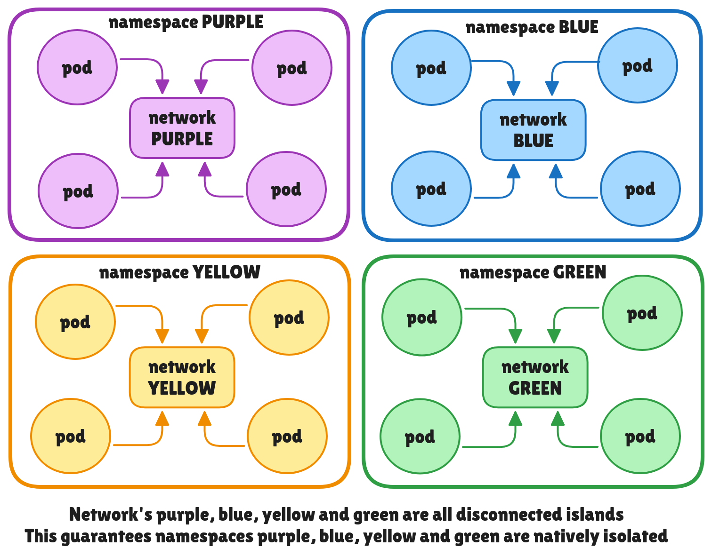
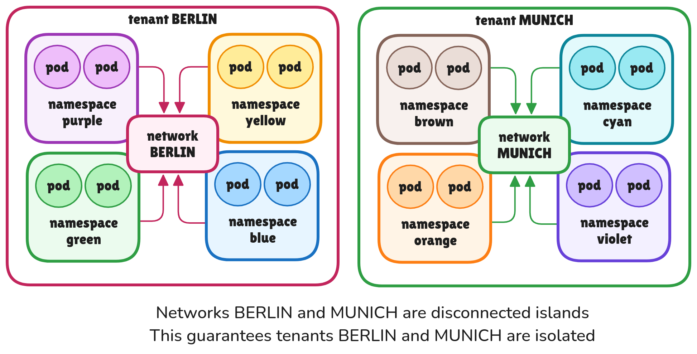

User Defined Networks¶
Introduction¶
User Defined Networks (UDNs) in OVN-Kubernetes offer flexible network configurations for users, going beyond the traditional single default network model for all pods within a Kubernetes cluster. This feature addresses the diverse and advanced networking requirements of various applications and use cases.
Motivation¶
Traditional Kubernetes networking, which typically connects all pods to a default Layer3 network, lacks the necessary flexibility for many modern use cases and advanced network capabilities. UDNs provide several key advantages:
- Workload/Tenant Isolation: UDNs enable the grouping of different application types into isolated networks within the cluster, preventing communication between them.
- Flexible Network Topologies: Users can create different types of overlay networks that suits their use cases and then attach their workloads to these networks which are then isolated natively.
- Overlapping Pod IPs: UDNs allow the creation of multiple networks within a cluster that can use the same IP address ranges for pods, expanding deployment scenarios.
See the enhancement for more details.
User-Stories/Use-Cases¶
See the user-stories defined in the enhancement.
The two main user stories are:
Native Namespace Isolation using Networks¶

{kind=link}
Native Tenant Isolation using Networks¶

{kind=link}
There are more user stories which will be covered in the sections below with appropriate diagrams.
How to enable this feature on an OVN-Kubernetes cluster?¶
This feature is disabled by default. Enable it with the
--enable-network-segmentation feature config option under
OVNKubernetesFeatureConfig:
--enable-network-segmentation=true
--enable-multi-network=true
UDNs require both --enable-network-segmentation and
--enable-multi-network. UDNs use NetworkAttachmentDefinitions as an
underlying implementation detail and reuse the user-defined network
controllers. Note that changing the feature configuration does not remove
existing CRs in the cluster.
Always check the dependencies on the Requirements page
Performance/Scale Optimizations for UDN¶
UDN scale is currently constrained to a couple of hundred UDNs when every UDN is rendered on every node in the cluster. If you need to scale beyond that, use the Dynamic UDN feature which can reduce per-node OVN-Kubernetes workload, avoid unused per-node UDN state, and avoid per-node allocations until resources that need the UDN are scheduled on that node. See the Dynamic UDN feature page for enablement, observability, and limitations.
For primary CUDNs that need a different external gateway path than the cluster default gateway bridge, see the Uplinks feature page. Uplinks allow a CUDN to use a pre-provisioned OVS bridge on selected nodes, including regular node and DPU deployments.
Workflow Description¶
A tenant consists of one or more namespaces in a cluster. Network segmentation can be achieved by attaching 1 or more namespaces as part of same network which are then not reachable from other namespaces in the cluster that are not part of that network.
Implementation Details¶
User facing API Changes¶
The implementation of UDNs introduces two new Custom Resource Definitions (CRDs) for network creation:
-
Namespace-scoped UserDefinedNetwork (UDN): This CRD is for tenant owners, allowing them to create networks within their namespace. This provides isolation for their namespaces from other tenants' namespaces.
-
Cluster-scoped ClusterUserDefinedNetwork (CUDN): This CRD provides cluster administrators with the ability to allow multiple namespaces to be part of the same network that is then isolated from other networks.
NOTE: For a namespace to be considered for UDN creation, it must be
labeled with k8s.ovn.org/primary-user-defined-network at the time of its
creation. This label cannot be updated later, and if absent, the namespace
will not be considered for UDN creation.
See the api-specification-docs for information on each of the fields
OVN-Kubernetes Implementation Details¶
UserDefinedNetworks is an opinionated implementation
of multi-networking in Kubernetes. There are two types of
UserDefinedNetworks:
Primary: Also known as P-UDN -> Primary UserDefinedNetwork: This means the network will act as the primary network for the pod and all default traffic will pass through this network except for Kubelet healthchecks which still uses the default cluster-wide network as Kubernetes is not multi-networking aware.Secondary: Also known as S-UDN -> Secondary UserDefinedNetwork: This means the network will act as only a secondary network for the pod and only pod traffic that is part of the secondary network may be routed through this interface. These types of networks have existed for a long time usually created usingNetworkAttachmentDefinitionsAPI but are now more standardised using UDN CRs.
OVN-Kubernetes currently doesn't support north-south traffic for secondary networks and none of the core Kubernetes features like Services will work there. Primary networks on the other hand has full support for all features as present on cluster default network.
UDNs can have flexible virtual network topologies to suit the use cases of end users. Currently supported topology types for a given network include:
Layer3 Networks
Layer3: is a topology type wherein the pods or VMs are connected to their
node’s local router and all these routers are then connected to the distributed
switch across nodes.
- Each pod would hence get an IP from the node's subnet segment
- When in doubt which topology to use go with layer3 which is the same topology as the cluster default network
- Can be of type
primaryorsecondary
Let's see how a Layer3 Network looks on the OVN layer.
{kind=link}
Here we can see a blue and green P-UDN. On node1, pod1 is part of green UDN and pod2 is part of blue UDN. They each have a udn-0 interface that is attached to the UDN network and a eth0 interface that is attached to the cluster default network (grey color) which is only used for kubelet healthchecks.
Layer2 Networks
Layer2: is a topology type wherein the pods or VMs are all connected to the
same layer2 flat switch.
- Usually used when the applications deployed expect a layer2 type network connection (Perhaps applications want a single broadcast domain, latency sensitive, use proprietary L2 protocols)
- Common in Virtualization world for seamless migration of the VM since persistent IPs of the VMs can be preserved across nodes in your cluster during live migration
- Can be of type
primaryorsecondary
{kind=link}
Here we can see a blue and green P-UDN. On node1, pod1 is part of green UDN and pod2 is part of blue UDN. They each have a udn-0 interface that is attached to the UDN network and a eth0 interface that is attached to the cluster default network (grey color) which is only used for kubelet healthchecks.
Localnet Networks
Localnet: is a topology type wherein the pods or VMs attached to a localnet
network on the overlay can egress to the provider’s physical network
- without SNATing to nodeIPs… preserves the podIPs
- podIPs can be on the same subnet as the provider’s VLAN
- VLAN IDs can be used to mark the traffic coming from the localnet for isolation on provider network
- Can be of type
secondary, it cannot be aprimarynetwork of a pod. - Only
ClusterUserDefinedNetworksupportslocalnet
{kind=link}
Here we can see blue and green S-UDN localnet networks.
The ovnkube-cluster-manager component watches for these CR's and the controller reacts to it by creating NADs under the hood. The ovnkube-controller watches for the NADs and creates the required OVN logical constructs in the OVN database. The ovnkube-node also adds the required gateway plumbing such as openflows and VRF tables and routes to provide networking to these networks.
Localnet secondary networks also support delegating IP assignment to an external DHCP server instead of an OVN-Kubernetes-managed pool. See the DHCP IPAM for Localnet Networks page for details.
Creating UserDefinedNetworks¶
Now that we understand what a UDN is, let's get handson!
Let's create two namespaces blue and green:
apiVersion: v1
kind: Namespace
metadata:
name: blue
labels:
name: blue
k8s.ovn.org/primary-user-defined-network: ""
---
apiVersion: v1
kind: Namespace
metadata:
name: green
labels:
name: green
k8s.ovn.org/primary-user-defined-network: ""
Sample API yaml for create two UserDefinedNetworks of type Layer3 in these namespaces:
apiVersion: k8s.ovn.org/v1
kind: UserDefinedNetwork
metadata:
name: blue-network
namespace: blue
labels:
name: blue
purpose: kubecon-eu-2025-demo
spec:
topology: Layer3
layer3:
role: Primary
subnets:
- cidr: 103.103.0.0/16
hostSubnet: 24
---
apiVersion: k8s.ovn.org/v1
kind: UserDefinedNetwork
metadata:
name: green-network
namespace: green
labels:
name: green
purpose: kubecon-eu-2025-demo
spec:
topology: Layer3
layer3:
role: Primary
subnets:
- cidr: 203.203.0.0/16
hostSubnet: 24
Expanding a Primary Layer3 UDN with additional cluster subnets¶
A Primary Layer3 UDN or CUDN can have multiple cluster subnets in each IP family. This allows an operator to add address space when the existing cluster subnet no longer has enough host subnets for additional nodes.
Each node is allocated one host subnet per IP family from the configured cluster subnet pool.
To expand the pool, append a subnet to spec.layer3.subnets. For example, the
blue-network UDN from the previous section can be expanded with another IPv4
cluster subnet:
apiVersion: k8s.ovn.org/v1
kind: UserDefinedNetwork
metadata:
name: blue-network
namespace: blue
spec:
topology: Layer3
layer3:
role: Primary
subnets:
- cidr: 103.103.0.0/16
hostSubnet: 24
- cidr: 103.104.0.0/16
hostSubnet: 24
Existing node and pod assignments remain unchanged. The added range is available for nodes that do not yet have a host subnet, including newly added nodes.
The following restrictions apply:
- Multiple cluster subnets are supported only for Primary Layer3 UDNs and CUDNs.
- Existing subnet entries cannot be removed or modified; expansion is append-only.
- Cluster subnets must not overlap or contain one another.
- All cluster subnets in the same IP family must use the same
hostSubnetvalue. IPv4 and IPv6 can use different values and can be expanded independently.
Inspecting a UDN Pod¶
Now if you create pods on these two namespaces and try to ping one pod from the other pod, you will see that connection won't work.
$ k get pods -n blue -owide
NAME READY STATUS RESTARTS AGE IP NODE
blue 1/1 Running 0 9h 10.244.0.7 ovn-worker
blue1 1/1 Running 0 8h 10.244.1.4 ovn-worker2
$ k get pods -n green -owide
NAME READY STATUS RESTARTS AGE IP NODE
green 1/1 Running 0 9h 10.244.0.6 ovn-worker
NOTE: Doing kubectl get pods and describe pod will all show the default network podIP which is not to be confused with the UDN podIPs. Remember how we said Kubernetes is not multi-networking aware? Hence pod.Status.IPs will always be the IPs that kubelet is aware of for healthchecks to work.
In order to see the real UDN PodIPs, always do a describe on the pod and see the following annotations on the pod:
$ k get pod -n green green -oyaml
apiVersion: v1
kind: Pod
metadata:
annotations:
k8s.ovn.org/pod-networks: '{"default":{"ip_addresses":["10.244.0.6/24"],
"mac_address":"0a:58:0a:f4:00:06","routes":[{"dest":"10.244.0.0/16",
"nextHop":"10.244.0.1"},{"dest":"100.64.0.0/16","nextHop":"10.244.0.1"}],
"ip_address":"10.244.0.6/24","role":"infrastructure-locked"},
"green/green-network":{"ip_addresses":["203.203.2.5/24"],
"mac_address":"0a:58:c8:0a:02:05","gateway_ips":["203.203.2.1"],
"routes":[{"dest":"203.203.0.0/16","nextHop":"203.203.2.1"},
{"dest":"10.96.0.0/16","nextHop":"203.203.2.1"},{"dest":"100.65.0.0/16",
"nextHop":"203.203.2.1"}],"ip_address":"203.203.2.5/24","gateway_ip":"203.203.2.1",
"role":"primary"},"green/green-secondary-network":{"ip_addresses":["100.10.1.7/24"],
"mac_address":"0a:58:64:0a:01:07","routes":[{"dest":"100.10.0.0/16",
"nextHop":"100.10.1.1"}],"ip_address":"100.10.1.7/24","role":"secondary"}}'
default which is the cluster-wide infrastructure-locked network only used
for Kubelet health checks and pod has IP 10.244.0.6 here
* primary which is the primary UDN for the pod through which all traffic
passes through and pod has IP 203.203.2.5.
* secondary which is the secondary UDN network for the pod from which pod has IP 100.10.1.7
One can also use the multus annotation to figure out the podIPs on each interface:
$ oc get pod -n green green -oyaml
apiVersion: v1
kind: Pod
metadata:
annotations:
k8s.v1.cni.cncf.io/network-status: |-
[{
"name": "ovn-kubernetes",
"interface": "eth0",
"ips": [
"10.244.0.6"
],
"mac": "0a:58:0a:f4:00:06",
"dns": {}
},{
"name": "ovn-kubernetes",
"interface": "ovn-udn1",
"ips": [
"200.203.2.5"
],
"mac": "0a:58:c8:0a:02:05",
"default": true,
"dns": {}
},{
"name": "green/green-secondary-network",
"interface": "net1",
"ips": [
"100.10.1.7"
],
"mac": "0a:58:64:0a:01:07",
"dns": {}
}]
KubeletHealthChecks for UDN pods¶
In each of the above diagrams we saw a grey network still attached to all
pods across all UDNs. This represents the cluster default network which
is infrastructure-locked for primary-UDN pods and is only used for healthchecks.
We add UDN Isolation ACLs and cgroups NFTable rules on these pod ports so that no traffic except healthcheck traffic from kubelet is allowed to reach these pods.
Using OVN ACLs, we ensure only traffic from kubelet is allowed on the
default eth0 interface of the pods:
_uuid : 1278b0f4-0a14-4637-9d05-83ba9df6ec03
action : allow
direction : from-lport
external_ids : {direction=Egress, "k8s.ovn.org/id"="default-network-controller:UDNIsolation:AllowHostARPPrimaryUDN:Egress", "k8s.ovn.org/name"=AllowHostARPPrimaryUDN, "k8s.ovn.org/owner-controller"=default-network-controller, "k8s.ovn.org/owner-type"=UDNIsolation}
label : 0
log : false
match : "inport == @a8747502060113802905 && (( arp && arp.tpa == 10.244.2.2 ) || ( nd && nd.target == fd00:10:244:3::2 ))"
meter : acl-logging
name : []
options : {}
priority : 1001
sample_est : []
sample_new : []
severity : []
tier : 0
_uuid : 489ae95b-ae9d-47d0-bf1d-b2477a9ed6a2
action : allow
direction : to-lport
external_ids : {direction=Ingress, "k8s.ovn.org/id"="default-network-controller:UDNIsolation:AllowHostARPPrimaryUDN:Ingress", "k8s.ovn.org/name"=AllowHostARPPrimaryUDN, "k8s.ovn.org/owner-controller"=default-network-controller, "k8s.ovn.org/owner-type"=UDNIsolation}
label : 0
log : false
match : "outport == @a8747502060113802905 && (( arp && arp.spa == 10.244.2.2 ) || ( nd && nd.target == fd00:10:244:3::2 ))"
meter : acl-logging
name : []
options : {}
priority : 1001
sample_est : []
sample_new : []
severity : []
tier : 0
_uuid : 980be3e4-75af-45f7-bce3-3bb08ecd8b3a
action : drop
direction : to-lport
external_ids : {direction=Ingress, "k8s.ovn.org/id"="default-network-controller:UDNIsolation:DenyPrimaryUDN:Ingress", "k8s.ovn.org/name"=DenyPrimaryUDN, "k8s.ovn.org/owner-controller"=default-network-controller, "k8s.ovn.org/owner-type"=UDNIsolation}
label : 0
log : false
match : "outport == @a8747502060113802905"
meter : acl-logging
name : []
options : {}
priority : 1000
sample_est : []
sample_new : []
severity : []
tier : 0
_uuid : cca19dca-1fde-4a14-841d-7e2cce804de4
action : drop
direction : from-lport
external_ids : {direction=Egress, "k8s.ovn.org/id"="default-network-controller:UDNIsolation:DenyPrimaryUDN:Egress", "k8s.ovn.org/name"=DenyPrimaryUDN, "k8s.ovn.org/owner-controller"=default-network-controller, "k8s.ovn.org/owner-type"=UDNIsolation}
label : 0
log : false
match : "inport == @a8747502060113802905"
meter : acl-logging
name : []
options : {}
priority : 1000
sample_est : []
sample_new : []
severity : []
tier : 0
{kind=link}
As you can see here a default network pod, pod2 can't reach
the UDN pod pod1 via its eth0 interface thanks to the ACLs in place.
So no traffic from the UDN pod ever leaves via eth0. The only traffic
that is allowed via eth0 interface is the kubelet probe traffic.
But given how we have allow ACLs for kubelet traffic, but this matches
on management portIP which is the hostIP, any process on the host can
potentially reach the UDN pods. In order to have more tighter security,
we have cgroups based NFT rules on the host to prevent any non-kubelet
process from being able to reach the default network eth0 port on
UDN pods.
{kind=link}
These rules look like this:
chain udn-isolation {
comment "Host isolation for user defined networks"
type filter hook output priority filter; policy accept;
ip daddr . meta l4proto . th dport @udn-open-ports-v4 accept
ip daddr @udn-open-ports-icmp-v4 meta l4proto icmp accept
socket cgroupv2 level 2 475436 ip daddr @udn-pod-default-ips-v4 accept
ip daddr @udn-pod-default-ips-v4 drop
ip6 daddr . meta l4proto . th dport @udn-open-ports-v6 accept
ip6 daddr @udn-open-ports-icmp-v6 meta l4proto ipv6-icmp accept
socket cgroupv2 level 2 475436 ip6 daddr @udn-pod-default-ips-v6 accept
ip6 daddr @udn-pod-default-ips-v6 drop
}
set udn-open-ports-v4 {
type ipv4_addr . inet_proto . inet_service
comment "default network open ports of pods in user defined networks (IPv4)"
}
set udn-open-ports-v6 {
type ipv6_addr . inet_proto . inet_service
comment "default network open ports of pods in user defined networks (IPv6)"
}
set udn-open-ports-icmp-v4 {
type ipv4_addr
comment "default network IPs of pods in user defined networks that allow ICMP (IPv4)"
}
set udn-open-ports-icmp-v6 {
type ipv6_addr
comment "default network IPs of pods in user defined networks that allow ICMP (IPv6)"
}
set udn-pod-default-ips-v4 {
type ipv4_addr
comment "default network IPs of pods in user defined networks (IPv4)"
}
set udn-pod-default-ips-v6 {
type ipv6_addr
comment "default network IPs of pods in user defined networks (IPv6)"
}
The only exception to this is when users annotate
the UDN pod using the open-default-ports annotation:
k8s.ovn.org/open-default-ports: |
- protocol: tcp
port: 80
- protocol: udp
port: 53
Locating the kubelet cgroup¶
The rule above matches traffic by the cgroup kubelet runs in, so that
cgroup has to be known. By default ovnkube-node looks for a
kubelet.service directory under /sys/fs/cgroup, which finds it on
hosts where systemd runs kubelet.
Hosts that do not run kubelet under systemd have no such directory. Set
kubelet-cgroup-path in the [ovnkubenode] section, or
global.kubeletCgroupPath in the helm chart, to the cgroup kubelet runs
in, relative to /sys/fs/cgroup. It can be read from the running kubelet:
$ cat /proc/$(pidof kubelet)/cgroup
0::/podruntime/kubelet
which on that host means:
kubelet-cgroup-path = podruntime/kubelet
Point this at the cgroup of kubelet itself. Every process in the cgroup
that is matched is allowed to reach primary UDN pods, so a parent cgroup
opens that access to everything under it. On the host above, using
podruntime instead would also allow the container runtime and every
container shim it runs, not just kubelet. The cgroup root is rejected for
the same reason.
When kubelet probes are not supported¶
The cgroup match cannot always be installed. When it cannot, host
isolation is still applied and only the rule that lets kubelet through is
left out, so ovnkube-node keeps running. The node reports a
UDNKubeletProbesNotSupported event describing which of these applies:
- the host uses cgroup v1, which has no cgroup v2 path to match on
- the kubelet cgroup is not found, and no usable path is configured
- the kernel is built without
CONFIG_NFT_SOCKET, so it has nosocketexpression and the rule cannot load
httpGet, tcpSocket and grpc probes to primary UDN pods are dropped
in that case. The rules drop rather than reject, so a probe times out
instead of being refused:
Readiness probe failed: Get "http://[fd00:42:0:a::4]:8080/healthz":
context deadline exceeded (Client.Timeout exceeded while awaiting headers)
which looks like a slow or unhealthy pod rather than a policy decision, so the event on the node is what identifies the cause. There are two ways around it:
- use
execprobes, which run inside the pod and do not cross the host boundary - open the probe ports with the
open-default-portsannotation shown above
Kubelet restarts¶
The socket cgroupv2 match resolves the cgroup path to a numeric cgroup
ID when the rule is loaded, and the kernel does not update it afterward.
If kubelet restarts and its cgroup is recreated, the ID changes and the
rule stops matching. ovnkube-node watches systemd for kubelet restarts
and reloads the rule.
That watch needs systemd, and it needs the configured cgroup to belong to
a unit, so it is derived from the last component of the cgroup path,
kubelet.service for kubelet.slice/kubelet.service. On a host without
systemd, or when the configured path does not name a unit, restarts are
not tracked and the node reports a UDNKubeletRestartTrackingUnavailable
event.
Where restarts are not tracked, point kubelet-cgroup-path at the nearest
ancestor cgroup that is not recreated when kubelet restarts. On the host
above that is podruntime rather than podruntime/kubelet, which keeps
the rule valid across restarts but also lets everything else in that
cgroup, the container runtime and its shims, reach primary UDN pods. Weigh
that against the alternative: leaving the leaf cgroup configured means
probes stop working once kubelet's cgroup is recreated, until ovnkube-node
is restarted.
A rule that has gone stale can be recognised from the ruleset, because nft prints the cgroup ID it can no longer resolve instead of the path:
socket cgroupv2 level 2 669 ip daddr @udn-pod-default-ips-v4 accept
For helm on such a host, both settings are needed, and neither changes a deployment that does run systemd:
global:
noSystemd: true
kubeletCgroupPath: podruntime
noSystemd removes the systemd socket mount from ovnkube-node, which
cannot be satisfied where /run/systemd does not exist.
Overlapping PodIPs¶
Two networks can have the same subnet since they are completely
isolated. We use a masqueradeIP SNAT per UDN to avoid conntrack
collisions on the host. So traffic leaving each UDN is SNATed to
a unique IP before being sent to the host.
{kind=link}
VM LiveMigration and PersistentIPs over Layer2 UDNs¶
Users can use the layer2 topology when creating virtual machines
on OVN-Kubernetes and can easily live migrate the VMs across nodes
along with preserving their IPs.
{kind=link}
Services on UDNs¶
Creating a service on UDNs is same as creating them on default network, no extra plumbing is required.
apiVersion: v1
kind: Service
metadata:
name: service-blue
namespace: blue
labels:
network: blue
spec:
type: LoadBalancer
selector:
network: blue
ports:
- name: web
port: 80
targetPort: 8080
$ k get svc -n blue
NAME TYPE CLUSTER-IP EXTERNAL-IP PORT(S) AGE
service-blue LoadBalancer 10.96.207.175 172.19.0.10 80:31372/TCP 5s
$ k get endpointslice -n blue
NAME ADDRESSTYPE PORTS ENDPOINTS AGE
service-blue-55d6c IPv4 8080 103.103.1.5,103.103.0.5 65s
service-blue-pkll7 IPv4 8080 10.244.0.3,10.244.1.8 66s
When the service is created inside the blue namespace, the clusterIPs get automatically isolated from pods in other networks. However nodeports, loadbalancerIPs and externalIPs can be reached across UDNs.
EndpointSlices mirror controller for User-Defined Networks¶
Pods that use a UDN as their primary network will still have the cluster default network IP in their status. For services this results in the EndpointSlices providing the IPs of the cluster default network in the Kubernetes API. To enable services support for primary user-defined networks, the EndpointSlices mirror controller was introduced to create custom EndpointSlices with user-defined network IP addresses extracted from OVN-Kubernetes annotations.
The introduced controller duplicates the default EndpointSlices, creating new copies that include IP addresses from primary user-defined network. It bypasses EndpointSlices in namespaces that do not have a user-defined primary network. The controller lacks specific logic for selecting endpoints, it only replicates those generated by the default controller and replaces the IP addresses. For host-networked pods, the controller retains the same IP addresses as the default controller. Custom EndpointSlices not created by the default controller are not processed.
The mirror controller makes one exception for KubeVirt live migration. During
a non-failed migration, the source and target virt-launcher pods can both be
reported as not ready even though the virtual machine remains available on its
persistent IP address. The controller keeps these VM-owned endpoints ready and
serving, and reports them as not terminating, so the service load balancer does
not remove the VM backend during the handoff. This override does not apply after
a failed migration or to pods that are not owned by a virtual machine; those
endpoints retain the conditions reported by the default EndpointSlice.
The default EndpointSlices controller creates objects that contain the following labels:
endpointslice.kubernetes.io/managed-by:endpointslice-controller.k8s.io- Indicates that the EndpointSlice is managed by the default Kubernetes EndpointSlice controller.kubernetes.io/service-name:<service-name>- The service that this EndpointSlice belongs to, used by the default network service controller.
The EndpointSlices mirror controller uses a separate set of labels:
endpointslice.kubernetes.io/managed-by:endpointslice-mirror-controller.k8s.ovn.org- Indicates that the EndpointSlice is managed by the mirror controller.k8s.ovn.org/service-name:<service-name>- The service that this mirrored EndpointSlice belongs to, used by the user-defined network service controller. Note that the label key is different from the default EndpointSlice.k8s.ovn.org/source-endpointslice-version:<default-endpointslice-resourceversion>- The last reconciled resource version from the default EndpointSlice.
and annotations (Label values have a length limit of 63 characters):
- k8s.ovn.org/endpointslice-network:<udn-network-name> - The user-defined network
that the IP addresses in the mirrored EndpointSlice belong to.
- k8s.ovn.org/source-endpointslice:<default-endpointslice> - The name of the
default EndpointSlice that was the source of the mirrored EndpointSlice.
Example:
With the following NetworkAttachmentDefinition:
apiVersion: k8s.cni.cncf.io/v1
kind: NetworkAttachmentDefinition
metadata:
name: l3-network
namespace: nad-l3
spec:
config: |2
{
"cniVersion": "1.0.0",
"name": "l3-network",
"type": "ovn-k8s-cni-overlay",
"topology":"layer3",
"subnets": "10.128.0.0/16/24",
"mtu": 1300,
"netAttachDefName": "nad-l3/l3-network",
"role": "primary"
}
We can observe the following EndpointSlices created for a one-replica deployment
exposed through a sample-deployment service:
| Default EndpointSlice | Mirrored EndpointSlice |
|---|---|
|
|
That's how behind the scenes services on UDNs are implemented.
References¶
- Use the workshop yamls here to play around